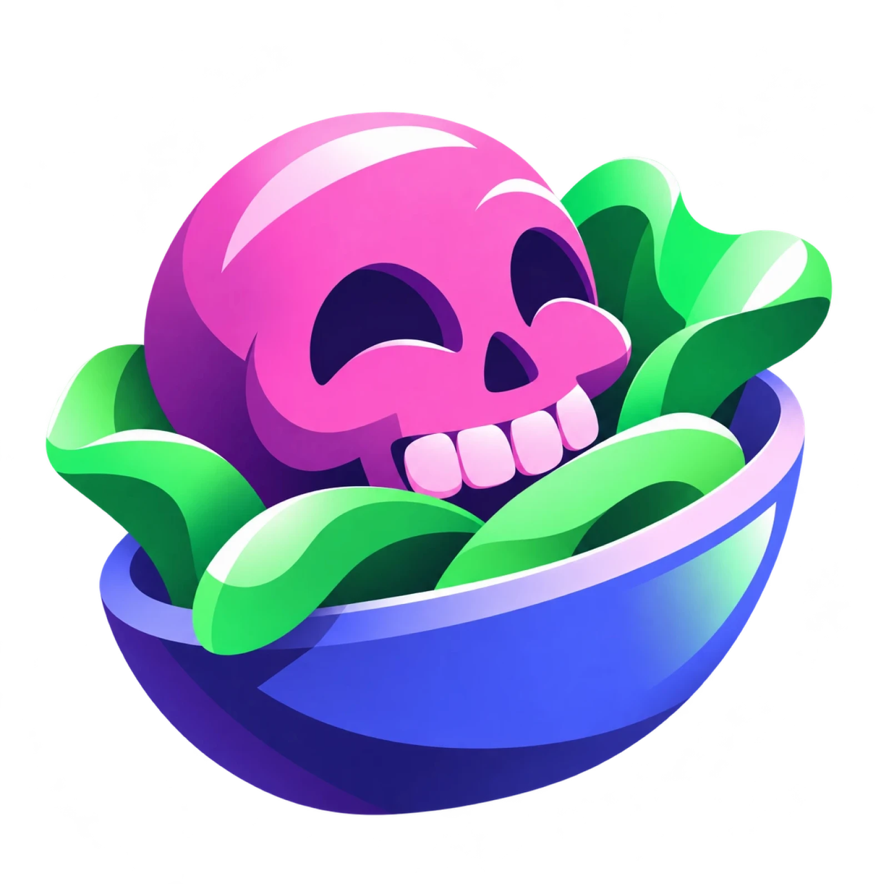

Skull Salad colours
Black first. The logo's pink, green and blue for the moments that matter, plum for depth, and their gradients straight from the art.

Primary: black
Black is the brand's main colour: the frame, the backgrounds, the big moments. The greys step up from it for surfaces and text, and they are the greys the Mac app already uses.
From the logo
Four ramps, 50 to 950. Steps marked with a dot are colours measured straight from the logo; the rest are filled in evenly between them, keeping the art's shifts in hue.
Highlights and utility
Two single colours from the art's highlights, and two utility colours the logo doesn't have but every interface needs, tuned to sit at the same strength.
Gradients
Each one follows the logo's own shading. Use them big (hero areas, the launch, progress), and keep everyday interface flat.
On black
Which colour does which job. Black and greys carry the interface; one accent at a time.
Gym business
12 images · edited 2 days ago
Archived ideas are hidden
Open the workbench to keep going.
| Role | Colour | On black | Use |
|---|
Files
Generated together from brand/tools/palette.swift; change colours there and rebuild.
colors.cssCSS variables: every step, the gradients and the roles.
BrandColors.swiftThe same for SwiftUI, ready to drop into the Mac app.
palette.jsonEverything, with contrast figures, for any other tool.